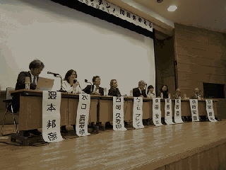

シンポジウム 「子宮頸がんワクチン」問題を考える −海外からの報告を踏まえて−
2015-11-23

HPVワクチン接種後の被害の発生は、日本だけではありません。日本および海外の被害者から被害実態の報告を受けるとともに、デンマークと日本でいち早く多くの被害者の診察に当たり、研究の最先端にいる医師の方々をお招きして、「子宮頸がんワクチン」問題の本質に迫ります。
■日時 2015年11月23日(祝) 13:30〜17:30（13:00開場）
■会場 東京大学鉄門記念講堂
（地下鉄「本郷三丁目」徒歩10分、「東大前」徒歩15分)
東大赤門入り,最初の右手に見える建物を過ぎたら右折、突当り建物左隣ビルの１４階
●事前申込不要・同時通訳付・資料代500円
＜プログラム＞
■第１部 基調講演
Louise Brinth (Frederiksberg 病院医師)
西岡 久寿樹（東京医科大学医学総合研究所所長）
横田 俊平（横浜市立大学名誉教授）
■第２部 被害実態
全国子宮頸がんワクチン被害者連絡会
海外の被害者（ビデオレター）
■第３部 パネルディスカッション
パネリスト Louise Brinth 西岡久寿樹 横田俊平 被害者
コーディネーター 隈本邦彦 水口真寿美
主 催
薬害オンブズパースン会議
全国子宮頸がんワクチン被害者連絡会
国民の医薬シンポジウム実行委員会
問合先 薬害オンブズパースン会議事務局 TEL 03-3350-0607
※シンポジウムは、230名の方々の参加を得て終了いたしました。ありがとうございました。
- 関連資料・リンク等
-
- 20151123シンポジウム報告（326 KB）
- 20151123ルイーセブレント資料（2678 KB）
- 20151123西岡資料（4737 KB）
- 20151123横田資料（2359 KB）
- 20151123池田資料（3684 KB）
- 20151123デンマークビデオレター（241 KB）
- 20151123英国ビデオレター（435 KB）
- 20151123打出資料（2385 KB）
- 20151123別府資料（470 KB）
- ちらし シンポジウム 「子宮頸がんワクチン」問題を考える − 海外からの報告を踏まえて−（891 KB）